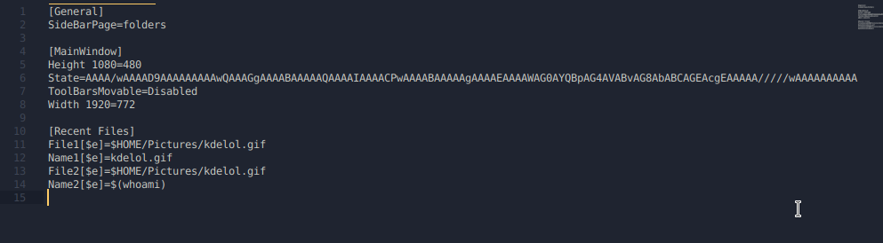
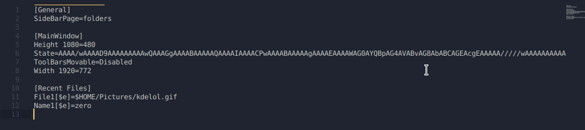

The Year of Linux on the Desktop (CVE-2019-14744)
0x01 Introduction⌗
There’s been a lot of controversy regarding the KDE KConfig vulnerability along with the way I decided to disclose the issue (full disclosure). Some have even decided to write up blog posts analyzing this vulnerability, despite the extremely detailed proof-of-concept I provided.
That’s why in this post I’m going to detail how I found the vulnerability, what led me to finding it, and what my thought process was throughout the research.
Firstly, to summarize: KDE Frameworks (kf5/kdelibs) < 5.61.0 is vulnerable to a command injection vulnerability in the KConfig class. This can be directly exploited by having a remote user view a specially crafted configuration file. The only interaction required is viewing the file in a file browser and/or on the desktop. Sure, this requires a user downloading a file, however it’s not hard to hide said file at all.
Exploit demo uploaded by Bleepingcomputer⌗
0x02 Discovery⌗
After I had finished publishing the last couple EA Origin vulnerabilities, I really wanted to get back on Linux and focus on vulnerabilities specific to Linux distributions. I figured that with Origin’s client being written using the Qt framework, and the fact that KDE was also built using the Qt framework, that I would maybe try and look into that. In turn, it led me to checking out KDE.
Another factor that probably played a part in this whole process was that I had been using KDE on one of my laptops, and was familiar enough with it that I could map out attack surface fairly easily.
The first lightbulb moment⌗
Most of the research I was doing at the time was shared with a good friend of mine who has helped me previously with other vulnerabilities. Thankfully this makes it easy for me to share the thought process with you folks.
Because I was looking into KDE, I decided to first look at their default image viewer (gwenview). The idea behind this was, “if I can find a vulnerability in the default image viewer, that should be a fairly reliable exploit”. Naturally, if we can host our payload in an image and trigger it when someone views it or opens it in their browser, it makes things really easy.
The first lightbulb moment came to me when I realized that gwenview actually compiles a list of recently viewed files, and uses the KConfig configuration syntax to set these entries.

What stood out to me was the shell variables. Massive red flag. Depending on how these variables are being interpreted, we may be able to achieve command execution. Clearly in File1 it’s calling $HOME/Pictures/kdelol.gif and resolving the variable, otherwise how would would gwenview figure out where the file is?
To see if these configuration entries were actually interpreting shell variables/commands, I added some of my own input in Name2

After looking in gwenview… nothing different? Okay that kind of sucks, so I went back to my configuration file to see if anything changed. Turns out, gwenview interprets the shell variables when it gets launched, so in order for those recent files to be interpreted, gwenview must be freshly launched after the configuration file has been updated.
Once that happens, the command will execute.

As you can see, the command in the Name2 entry got interpreted, and resolved the output of the $(whoami). The reason why it reverted back to Name1 is because I duplicated entries with File. This doesn’t make much difference for us at the moment, as long as our commands are executing, that should be enough for us to move forward.
Initially, I had no idea what the $e was supposed to mean, so I did the necessary digging and found the documentation for KDE System Configuration files.
Turns out the $e is there to tell KDE to allow shell expansions.
At this point, it wasn’t a vulnerability or a glaring issue at all. It definitely seemed dangerous though, and I was convinced more could be done to abuse it. After discovering KDE allows shell expansion in their config files, I sent a message to my buddy detailing what I had just learned.
Here I present the idea that maybe a content injection type payload would be possible via the filename. Unfortunately I tried this, and KDE seems to properly parse new entries and escape them by adding an additional $. Either way, if you were to send someone a file with said payload, that would obviously be suspicious. Kind of defeats the purpose.
At this point I wasn’t sure how to go about exploiting this issue. Surely there must be some way, this seems like a really bad idea. With that in mind, I got tired of trying the same thing over again and reading the same docs, so I took a break.
The second lightbulb moment⌗
Eventually I came back to KDE and was browsing a directory where I needed to see hidden files (dotfiles). I went to Control > Show Hidden Files, and realized all of a sudden it created a .directory file in the current working directory.
Okay, interesting. Being unsure of what this .directory file was, I looked at the contents.
[Dolphin]
Timestamp=2019,8,11,23,42,5
Version=4
[Settings]
HiddenFilesShown=true
The first thing I noticed was that it seemed to be consistent with the syntax that KDE uses for all of it’s configuration files. I instantly wondered if maybe those entries could be injected with a shell command, seeing as the .directory file was being read and processed by KConfig the moment the directory was opened.
I tried injecting the version entry with my shell command, but it kept getting over-written. Didn’t seem like it was going to work.
Now I was thinking “Hm, maybe KDE has some existing .directory files that could tell me something”. So I looked for them.
zero@pwn$ locate *.directory
/usr/share/desktop-directories/kf5-development-translation.directory
/usr/share/desktop-directories/kf5-development-webdevelopment.directory
/usr/share/desktop-directories/kf5-development.directory
/usr/share/desktop-directories/kf5-editors.directory
/usr/share/desktop-directories/kf5-edu-languages.directory
/usr/share/desktop-directories/kf5-edu-mathematics.directory
/usr/share/desktop-directories/kf5-edu-miscellaneous.directory
[...]
For an example, let’s take kf5-development-translation.directory and look at the contents.
kf5-development-translation.directory:
[Desktop Entry]
Type=Directory
Name=Translation
Name[af]=Vertaling
[...]
Icon=applications-development-translation
I noticed that within the [Desktop Entry] tag, certain entries were being called that had keys. For example, the af key on the name entry:
Name[af]=Vertaling
Seeing as KConfig is definitely checking entries for keys, let’s try adding a key with the $e option like the config documentation mentioned.
Another thing that really interested me at this point was the Icon entry. Here it gives you the option to set the icon of either the current directory, or the file itself. If the file is simply named .directory, it will set properties for the directory it’s in. If the file is named payload.directory, only the payload.directory file will have the Icon, not the parent directory. Why does it work like this? We’ll get into that in a second.
This is really appealing, cuz this means our Icon entry can get called without even opening a file, it can get called simply be navigating to a certain directory. If injecting a command with the $e key works here… dang, that was a little too easy, wasn’t it?
Surely, you already know the outcome of this story when using the following payload:
payload.directory⌗
[Desktop Entry]
Type=Directory
Icon[$e]=$(echo${IFS}0>~/Desktop/zero.lol&)
0x03 Under the Hood⌗
Like with any vulnerability, having access to the code can make our lives a lot easier. Having a full understanding of our “exploit” is essential in order to maximize impact and produce a good quality report.
At this moment I had identified a few things:
- Issue is actually a design flaw in KDE’s configuration
- Can be triggered by simply viewing a file/folder
The issue itself is clearly in KConfig, however if we can’t get the configuration entries called… there’s no way of triggering it. So there’s a couple parts to this. With this information, I decided to browse the code for KConfig and KConfigGroup. Here, I found a function called readEntry().
kconfiggroup.cpp⌗
We can see it’s doing a few things
- Checks for key in entry.
- If expand ($e) key exists,
expandString()on the value being read.
Obviously now we need to find out what expandString() is doing. Browsing around the docs we find the function in kconfig.cpp
kconfig.cpp⌗
TL;DR:
- Checks for
$characters. - Checks to see if
()follows. - Runs popen on the value
- Returns the value (had to cut off that part)
That pretty much explains most of how this works, however I wanted to follow the code and find exactly where readEntry(), then expandString(), was getting called and executing our command.
After searching around for quite a while on github, I determined that there was a function specific to desktop files, and that this function is called readIcon(), which is located in the KDesktopFile class.
kdesktopfile.cpp⌗
Basically it just uses the readEntry() function and grabs the Icon from the configuration file. Knowing this function exists… we can go back to our sources and search for readIcon().
I had only been messing with .directory files up until now, but after reading some more of the code, it turns out that this KDesktopFile class is used for more than just .directory files. It’s used for .desktop files too (who would have thought??????? lol).
Because KDE treats .directory and .desktop files as KDesktopFile’s and because the icon gets called from this class (or any other class, it doesn’t even matter in this case), our command will execute if we inject our command there.
0x04 Exploitation⌗
Finding ways to trigger readEntry⌗
SMB share method⌗
We know that if we can get someone to view a .directory or .desktop file, readEntry() gets called, and will thus execute our code. I figured there must be more ways to trigger readEntry. Ideally, fully remote, with less interaction, i.e NOT downloading a file.
The idea that came to mind to solve this was to use an smb:// URI in an iframe to serve a remote share that the user would connect to, ultimately having our .directory file executed the moment they connected.
Very unfortunately, KDE is unlike GNOME in the sense that it does NOT automatically mount remote shares, and does NOT trust .desktop/.directory files if they don’t already exist on the filesystem.
This essentially defeats the purpose of having a user accidentally browse a remote share and have arbitrary code executed. It’s funny, because automounting remote shares has been a feature that KDE users have been asking for for a very long time. Had they implemented it, this attack could’ve been quite a bit more dangerous.
Anyways, we can’t automatically mount remote shares, but KDE does have a client that’s meant to facilitate working with SMB shares that is apparently common among KDE users. This application is called SMB4k and doesn’t actually ship with KDE.
Once a share has been mounted using SMB4k, it can be accessed in Dolphin.
If we have write access to a public SMB share, (that people are browsing via smb4k) we can plant a malicious config file that would appear as the following when viewed in Dolphin, ultimately achieving code execution remotely.
ZIP method (nested config)⌗
Sending someone a .directory or .desktop file would obviously raise a lot of questions, right? I’d imagine so. That’s what most of the commentary around this subject seems to suggest. Why doesn’t that matter? Because nesting these files and forging their file extensions is the easiest thing you could possibly imagine.
We have options here. The first option is to create a nested directory, which will have its Icon loaded as soon as the parent directory is opened. This executes the code without even seeing or knowing the contents of the directory. For example, look at this httpd download from the Apache website.
There’s no way that an unsuspecting user would be able to identify that there’s a malicious .directory file nested in one of those directories. If you’re expecting it, sure, but generally speaking, no suspicion would arise.
nested directory payload⌗
$ mkdir httpd-2.4.39
$ cd httpd-2.4.39
$ mkdir test; cd test
$ vi .directory
[Desktop Entry]
Type=Directory
Icon[$e]=$(echo${IFS}0>~/Desktop/zer0.lol&)
ZIP the archive & send it off.
The moment the httpd-2.4.39 folder is opened in the file manager, the test directory will attempt to load the Icon, resulting in command execution.
ZIP method (lone config file)⌗
The second option we have, is to “fake” our file extensions. I actually forgot to document this method in the original proof-of-concept, but that’s why I’m including it here now. As it turns out, when KDE doesn’t recognize a file extension, it attempts to be “smart”, and assign a mimetype. If the file contains [Desktop Entry] at the beginning, it’s assigned the application/x-desktop mimetype. Ultimately allowing the file to be processed by KConfig on load.
Knowing this, we can make a fake TXT file with a character that closely resembles a “t”. To demonstrate how easy hiding the file is, I’ve used the httpd package again.

Obviously the icon gives it away, but still, it’s much more discreet than having a random .desktop/.directory file.
Again, as soon as this folder is opened, the code gets executed.
Drag & Drop method (lone config file)⌗
Honestly this method is relatively useless, but I thought it would be cool in the demo, along with adding a potential social-engineering vector to the delivery of this payload.
While I was picking apart KDE, I realized (accidentally) that you can actually drag and drop remote resources, and have a file-transfer trigger. This is all enabled by the KIO (kde input/output module)
This basically allows users to drag and drop remote files and transfer them onto their local filesystem.
Essentially, if we can SE a user to drag and drop a link, the file transfer will trigger and ultimately execute the arbitrary code the moment the file is loaded onto the system.

0x05 Outro⌗
Thanks to the KDE team, you no longer have to worry about this issue as long as the necessary patches have been made.
Huge kudos to them for getting this issue patched within approximately 24 hours of being made aware. That’s a very impressive response.
I’d also like to give big shoutout to the following friends of mine who were a huge help throughout the entire process. Check out the references for the weaponized payload Nux shared. :)